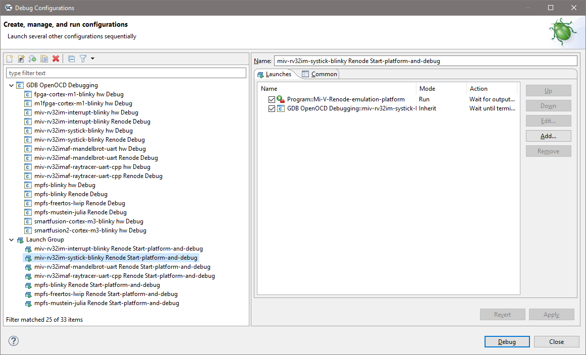
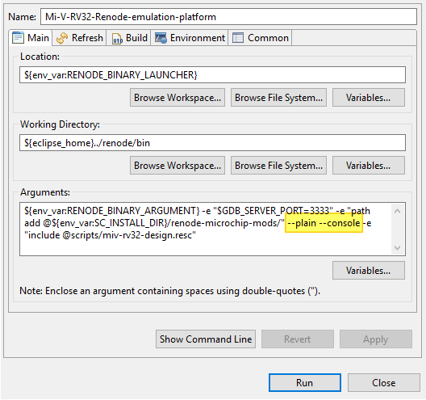
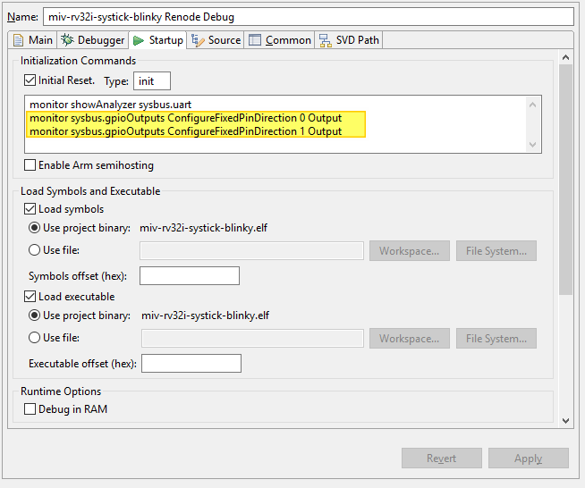
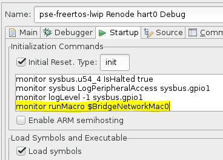

Renode simulation platform¶
Renode™ is an open-source software development framework with commercial support from Antmicro that lets you develop, debug and test multi-node device systems reliably, scalably and effectively. If all installation dependencies are met (see installation section), then the RISC-V examples can be run in the emulator.
To debug SoftConsole example project in the emulator, Renode must be run with the correct platform model. Bundled external launchers with platforms models are:
PolarFire-SoC-Icicle-Renode-emulation-platformfor PolarFire SoC Icicle boardMi-V-Renode-emulation-platformfor legacy RV32 Mi-V soft processor based on Rocket Chip:MIV_RV32IMA_L1_AHB,MIV_RV32IMA_L1_AXIandMIV_RV32IMAF_L1_AHB(the launcher name is identical to the previous SoftConsole release to intentionally keep compatibility with previous projects and their launchers)Mi-V-RV32-Renode-emulation-platformfor currentMIV_RV32soft processor.
Note
Because now SoftConsole supports both, legacy and new RV32 Mi-V soft processors, user must be careful which build configurations and what launcher is used with them. Projects can support both targets at the same time (depending on what build configuration is selected).
After the target platform is running the GDB launcher can be used to connect the GDB client to the Renode platform GDB server. To simplify this process, the examples contain a separate group launcher which invokes the platform first, waits for it to be loaded and ready and then invokes the GDB launcher.
The sequence of execution of a group launcher is:
They are located in their own dedicated section in the Debug Configurations dialog:

The bundled examples shipped with the example workspace have these group launchers:
miv-rv32imaf-cppexamplemiv-rv32imaf-cpp Renode-legacy-rv32 Start-platform-and-debug
miv-rv32i-systick-blinkyexamplemiv-rv32i-systick-blinky Renode-legacy-rv32 Start-platform-and-debugforMIV_RV32IMA_L1_AHB,MIV_RV32IMA_L1_AXIandMIV_RV32IMAF_L1_AHBsoft processor when using usingmiv32ima-Debugandmiv32ima-Releasebuild configurationsmiv-rv32i-systick-blinky Renode-rv32i Start-platform-and-debugforMIV_RV32soft processor when usingmiv32i-Debug,miv32i-Release,miv32imc-Debugormiv32imc-Releasebuild configurations
mpfs-gpio-interruptexamplempfs-gpio-interrupt Renode All-harts Start-platform-and-debugNote
The DDR training on Renode targets is extremely slow and applications do not reach the main breakpoint for an extensive time. DDR on Renode doesn’t have to be trained, it works reliably instantly on the ‘power-up’. Applications targeting Renode can disable the DDR training to avoid this issue.
mpfs-musteinexamplempfs-mustein Renode All-harts Start-platform-and-debug
After the GDB client connection the Renode needs to start the simulation. In a case of Mi-V RV32 models the simulation will automatically start on the GDB launcher connection. While with the MPFS launcher the simulation doesn’t start automatically on connection, the launcher has to invoke a monitor command to start simulation monitor start explicitly. Examples usually have this already set up inside Pre-Run/Restart section:
![digraph {
graph [rankdir="LR", ranksep=.01, bgcolor=transparent];
node [fontname="Verdana", fontsize="9", shape="rectangle", width=.1, height=.2, margin=".04,.01", style=filled, fillcolor=white];
edge [arrowsize=.7];
"SoftConsole Menu toolbar" -> "Run" -> "Debug Configurations" -> "Launcher for \<YOUR_PROJECT\>"
}](../_images/graphviz-0a72c01cdcd03d103982e7ccec6ae38792a65ef9.png)
Then inside the dialog:
Note
Some edge-case launchers might not be starting the simulation, if they are designed to attach to a running target. They might have other differences, such as load the symbols file (elf), but not load the executable (elf). And they might not set the PCs of the harts with the thread apply all set $pc=_start.
The debug launchers for Renode are almost identical to the launchers for real RISC-V hardware targets except:
Disabled/uncheck “Start OpenOCD locally” as Renode debugging does not use OpenOCD/JTAG but connects GDB directly to the Renode GDB Remote Serial Protocol interface.
RISC-V 32-bit targets need the following commands:
Have set the architecture and symbols:
set architecture riscv:rv32
Note
Edge case issues can be avoided when providing a symbol file here making the connection to the target:
file ${config_name:<YOUR_PROJECT_NAME>}/<YOUR_PROJECT_NAME>.elf`This helps to recognize the 32-bit and 64-bit architectures apart when the
set architecture riscv:rv32fails to set the architecture correctly. Loading symbols after connection might be too late to detect the architecture correctly. As this needs to be handled correctly before the connection happens.Note
If in previous documents and projects was
set arch riscv:rv32used instead ofset architecture riscv:rv32, then it can be considered as analogous. Thearchis an abbreviation forarchitectureand does the same function.For PolarFire SoC targets (mpfs examples) the launcher must contain:
The Startup -> Run/Restart Commands needs to contain the following code:
thread apply all set $pc=_start monitor start
Two RV32 platforms¶
The bundled example miv-rv32i-systick-blinky project supports the new soft processor (MIV_RV32) and legacy soft processor too (MIV_RV32IMA_L1_AHB, MIV_RV32IMA_L1_AXI and MIV_RV32IMAF_L1_AHB). This requires extra attention to what build configuration can be used with what target and with what launcher:
| Configuration | Target | Launcher to debug with Renode |
|---|---|---|
| miv32i-Debug | new RV32 | miv-rv32i-systick-blinky Renode-rv32i Start-platform-and-debug |
| miv32i-Release | new RV32 | miv-rv32i-systick-blinky Renode-rv32i Start-platform-and-debug |
| miv32ima-Debug | legacy RV32 | miv-rv32i-systick-blinky Renode-legacy-rv32 Start-platform-and-debug |
| miv32ima-Release | legacy RV32 | miv-rv32i-systick-blinky Renode-legacy-rv32 Start-platform-and-debug |
| miv32imc-Debug | new RV32 | miv-rv32i-systick-blinky Renode-rv32i Start-platform-and-debug |
| miv32imc-Release | new RV32 | miv-rv32i-systick-blinky Renode-rv32i Start-platform-and-debug |
Note
When targeting real Hardware, then all the configurations are using the same launcher miv-rv32i-systick-blinky Hw Debug. However the connected board must have matching design. For the new core it needs to be 2022.1 release of MIV_RV32 with ESS memory map (such as DGC2 config). And for the legacy core it needs to be 2022.1 release of MIV_RV32IMA_L1_AHB, MIV_RV32IMA_L1_AXI or MIV_RV32IMAF_L1_AHB (for example CFG1 config). The reset vector for legacy core changed in this release and using older builds of this core is not recomended.
Embedded monitor window¶
From SoftConsole 2022.2 the Renode’s monitor is embedded inside SoftConsole as a terminal, the terminal can’t handle colors well (so colors are disabled) and many features such as auto-complete are not working well.
Users who interact with Renode’s monitor frequently might want to revert back to the
standalone monitor. Which can be done by editing the external launchers and
removing the --plain --console from them.
![digraph {
graph [rankdir="LR", ranksep=.01, bgcolor=transparent];
node [fontname="Verdana", fontsize="9", shape="rectangle", width=.1, height=.2, margin=".04,.01", style=filled, fillcolor=white];
edge [arrowsize=.7];
"SoftConsole Menu toolbar" -> "Run" -> "External Tools" -> "External Tools Configurations..." -> "<RENODE_LAUNCHER>" -> "Main"
}](../_images/graphviz-b8d7972affa9b2b4a179c8183bfccd6cba06e114.png)

Fixed configuration of a GPIO peripheral¶
In hardware the GPIOs can be configured on runtime by the application, or have fixed configuration from within Libero.
Use monitor commands monitor sysbus.gpioOutputs ConfigureFixedPinDirection <PinNumber> <Input/Output> inside the debug launcher to achieve the same effect from within Renode:

Useful Links¶
<SC_INSTALL_DIR>/documentation/renode/index.html(contains version of the documentation which is matching with the bundled Renode)
Note
The Renode which is shipped inside SoftConsole might be ahead (or behind) Antmicro’s official releases and therefore Antmicro’s released information might not always apply to Renode shipped with SoftConsole.
Windows firewall¶
On Windows if there is a firewall in use then the first time that a debug session is run the firewall may prompt that it is blocking
OpenOCD, fpServer.exe and/or renode.exe. Allow the firewall to unblock these and save this as the default setting if
necessary.
There was an error executing command sysbus.cpu StartGdbServer 3333 true¶
Something is keeping the port 3333 opened, it could be some other application, but in most cases it’s just a previous instance
of the Renode. Close it by pressing X on the window or stop the group launcher which should stop the Renode and the gdb
client as well.
Macros¶
Macros are useful in many scenarios:
When using common and frequently used calls to remove code duplication (maintaining one macro is easier than maintaining all instances where it is used)
When simplifying launchers, it is easier to invoke one macro than few commands
When renaming actions, a command can be encapsulated into a macro in a case the original command is hard to remember.
When a watch command is invoking few commands.
When using ‘monitor’ with longer commands, at the moment the monitor command length is limited and might cause problems when invoking longer commands (they will get truncated and then they will misbehave). Macro can contain long commands and then it can be invoked with a short name.
SoftConsole for RISC-V v2022.2 has bundled a few macros, to get them listed run any PolarFire SoC platform (at the moment no Mi-V macros bundled) and type runMacro in the Renode’s monitor window:
Available macros:
global.BridgeNetworkMac0
global.WiresharkRun
global.MCsrLegend
global.MCsrAll
global.TraceAll
global.LoadSymbols
global.SetAllPCs
To invoke one of these the following syntax must be used:
runMacro $MCsrLegend
or
runMacro $MCsrAll
The MCsrAll macro can be used to troubleshoot trap related CSRs quickly on all harts without a need to use IDE. To see how they are made open the macro file:
<SC_INSTALL_DIR>/renode-microchip-mods/script/macros-pfsoc.resc
Any project including this file inherits the macros and it is possible for users to create their own. When there is a need to trigger a command once per second, for example pressing a GPIO button, then a watch command can be used:
watch "gpio0.button0 PressAndRelease" 1000
This will invoke the gpio0.button0 PressAndRelease command each 1000ms. If a CSRs needs to be fetched and monitored, then the watch command can just invoke a macro which can contain much more involved commands. Combination of nested commands can be sometimes useful as well:
sysbus.u54_1 PC `sysbus.e51 PC`
The sysbus.e51 PC will be evaluated first, which will GET the value of the PC, it acts as GET because no second parameter with the value given after the PC property. Then this value is used as SET for the u54_1’s PC, it acts as SET because after PC property there is a value given (the PC of the e51).
Note
Be aware when tracking MCAUSE and the IRQ is triggered (not a trap exception) that the mcause values can be greater than 0x8000000000000000 on 64-bit platforms and greater than 0x80000000 on 32-bit platforms.
Symbols and simple trace functionality¶
When debugging the debugging-client connects to debugging-server which then talks to the target. With HW targets the GDB-client connects to OpenOCD (which implements and behaves as GDB server) and with FlasPro programmer talks through JTAG with the target.
However, Renode is overlapping slightly with the debugging-client task even when SoftConsole treats Renode only as the GDB server and target.
Typically, the symbol information is used only by the debugger-client, while the debugger-server nor the target do not
need this information. Renode has some debugger-client features, but there is no automated mechanism to transfer
these symbols from within SoftConsole as Renode is treated as regular GDB server (which typically doesn’t need
symbol information). This means that the following commands can’t be automated in a generic manner.
The Renode must be launched, this is demonstrated on mpfs-gpio-interrupt example, but can be applied to other projects.
Use the mpfs-mpfs-gpio-interrupt renode all-harts start-platform-and-debug group launcher, wait for it to break on
main and load symbols into Renode by typing the following into Renode’s monitor window:
sysbus LoadSymbolsFrom @../../extras/workspace.examples/mpfs-gpio-interrupt/LIM-Debug/mpfsblinky.elf
The path to the symbols is referenced relative to Renode’s binary and needs to contain correct path to workspace, correct project, correct configuration (Debug/Release) and then correct binary name. Problem is that this is not generic and even when using macros, the path could be different depending on what workspace or what project name user’s use. For PolarFireSoC users there is LoadSymbols macro, but requires users to set the SYMBOLS variable:
set SYMBOLS @../../extras/workspace.examples/mpfs-gpio-interrupt/LIM-Debug/mpfs-gpio-interrupt.elf
runMacro $LoadSymbols
These might be added to the debug launcher in some cases (with monitor prefix), but it’s not a reliable way to load the symbols as the path might change and because monitor command has string length limitation (see section Macros ). Now the runMacro $McsrAll can resolve symbols and can tell the user where the PC of each hart is and what it’s symbol. This can be used to resolve to what symbol some memory locations belong, for example (use backtick symbol):
sysbus FindSymbolAt `sysbus.u54_1 PC`
sysbus FindSymbolAt `sysbus.e51 MEPC`
The MEPC on target’s boot-up is not populated and therefore not resolved, but when it is invoked later (when the emulation was started) it should get populated on the first interrupt or the first trap exception and then the resolution should work, this should be useful when troubleshooting traps as it can tell the user where the application had trap without a need to open the listing/assembly file and searching for the MEPC’s value. See the section about trap exceptions:
It is possible to resolve all the PCs to symbols as the application runs. To enable it on e51 CPU, use the following command:
sysbus.e51 LogFunctionNames true
The LogLevel on the platform might be set to ‘error’ only and this is an ‘info’ level, therefore execute:
logLevel 1 sysbus.e51
On PolarFireSoC targets, there is ‘TraceAll’ macro which enables this trace feature on all CPUs, or ‘TraceE51’ macro if just E51 trace is needed (macros for all other harts exist as well). However, enabling too much of debug/trace information might cause unnecessary verbosity and make the debugging harder, therefore it’s good to enable as little as needed.
Now running the mpfs-gpio-interrupt application by:
pressing
Resumeicon button in the main toolbarF8key shortcut![digraph { graph [rankdir="LR", ranksep=.01, bgcolor=transparent]; node [fontname="Verdana", style=filled, fillcolor=white, fontsize="9", shape="rectangle", width=.1, height=.2, margin=".04,.01"]; edge [arrowsize=.7]; "SoftConsole Menu toolbar" -> "Run" -> "Resume"; }](../_images/graphviz-e2175bd303c5c89939e0f3a55c64e165aeace2c7.png)
And it should start outputting simplified trace information. The SoftConsole’s Console tab should show when and what parts of the code was the CPU executing:
17:14:04.7767 [INFO] e51: Entering function MSS_UART_polled_tx_string at 0x80024D8
17:14:04.7767 [INFO] e51: Entering function gpio0_bit0_or_gpio2_bit13_plic_0_IRQHandler at 0x8003A1A
17:14:15.9247 [INFO] e51: Entering function gpio0_bit0_or_gpio2_bit13_plic_0_IRQHandler at 0x8003A1A
17:14:15.9378 [INFO] e51: Entering function gpio0_bit0_or_gpio2_bit13_plic_0_IRQHandler at 0x8003A1C
17:14:15.9488 [INFO] e51: Entering function gpio0_bit0_or_gpio2_bit13_plic_0_IRQHandler at 0x8003A1E
17:14:15.9603 [INFO] e51: Entering function gpio0_bit0_or_gpio2_bit13_plic_0_IRQHandler at 0x8003A22
17:14:15.9749 [INFO] e51: Entering function MSS_GPIO_set_output (entry) at 0x80032FE
17:14:15.9749 [INFO] e51: Entering function gpio_number_validate (entry) at 0x80034B8
17:14:15.9749 [INFO] e51: Entering function gpio_number_validate at 0x80034D4
17:14:15.9749 [INFO] e51: Entering function gpio_number_validate at 0x80034F6
17:14:15.9749 [INFO] e51: Entering function gpio_number_validate at 0x800350E
17:14:15.9749 [INFO] e51: Entering function gpio_number_validate at 0x8003524
17:14:15.9749 [INFO] e51: Entering function gpio_number_validate at 0x8003530
17:14:15.9749 [INFO] e51: Entering function gpio_number_validate at 0x8003552
17:14:15.9749 [INFO] e51: Entering function MSS_GPIO_set_output at 0x8003326
17:14:15.9749 [INFO] e51: Entering function MSS_GPIO_set_output at 0x800332A
17:14:15.9749 [INFO] e51: Entering function MSS_GPIO_set_output at 0x8003334
17:14:15.9749 [INFO] e51: Entering function MSS_GPIO_set_output at 0x8003362
17:14:15.9749 [INFO] e51: Entering function gpio0_bit0_or_gpio2_bit13_plic_0_IRQHandler at 0x8003A26
With the current release there is no way to use this data in a more visualized manner, but even in the text-form it can be extremely useful. Sometimes it’s useful to build watch commands, for example to see what symbol the MEPC is when the IRQ/trap happened. It’s good to start building the commands in steps, first fetch the value of MEPC:
sysbus.e51 MEPC
Then resolving this address into a symbol (warping it with backtick character):
sysbus FindSymbolAt `sysbus.e51 MEPC`
And as last wrapping it into the watch command:
watch "sysbus FindSymbolAt `sysbus.e51 MEPC`" 200
This should keep updating the symbol where MEPC is pointing 5 times per second until Ctrl+C is pressed. If nothing is
displayed then Resume the application in the SoftConsole and trigger an IRQ by typing in Renode’s monitor:
gpio0.button0 PressAndRelease
Note
The user can make their own macros for Mi-V targets and use this feature however there are no macros bundled. Or use the commands directly without encapsulating them into macros.
Creating bridge/tunnel to the emulation¶
The following section will cover necessary steps to access the emulated network from within host OS, however in SoftConsole v2022.2-RISC-V this feature is accessible only from Linux hosts.
To access the emulated network the following macro must be added (there might be already preexisting monitor commands) to the debug launcher’s section
monitor runMacro $BridgeNetworkMac0
The bridge is sensitive if it was invoked before or after the emulation started and therefore keeping it in section
will be the most reliable way to use it:

When creating the bridge for the first time it might display error:
Could not set TUNSETIFF, error: 2
Renode is trying to probe user’s privileges, which should be safe to ignore. If the polkit and sudo are set to be passwordless, then the bridge should be created correctly without any other user’s interaction. See the chapter:
Could not set TUNSETIFF, error: 2
Then as superuser (root user, or regular user with sudo privileges) invoke on a Linux terminal:
ifconfig renode-tap0 172.16.0.1/24 up
The command above needs to be changed depending on the application’s IP settings.
Make sure that the renode-tap0 network is not overlapping with any other network on the user’s host. Including the virtual networks and bridges like docker’s network. When targeting real HW it is desired to make it part of an existing network (overlap with existing networks) and just keeping the IP unique (do not create conflicts on the network).
However, for the way how Renode is making the tunnel it is best to have completely unique and separate networks while the host’s IP will be the targets gateway. If this is not satisfactory and overlapping is required then to make it work might require other extra steps which are not covered in this document (setting up routes, gateway, firewall, software bridge …)
If the application is using these IP settings 172.16.0.3 / 255.255.255.0 then running ping 172.16.0.3 should start responding, however this might not be true for other applications, as they might have ICMP or even ARP disabled (see all troubleshooting sections related to networking).
The emulation is not as fast as the real hardware therefore the ping response times might vary:
# ping 172.16.0.3
PING 172.16.0.3 (172.16.0.3) 56(84) bytes of data.
64 bytes from 172.16.0.3: icmp_seq=1 ttl=255 time=202 ms
64 bytes from 172.16.0.3: icmp_seq=2 ttl=255 time=3.13 ms
64 bytes from 172.16.0.3: icmp_seq=3 ttl=255 time=2.43 ms
64 bytes from 172.16.0.3: icmp_seq=4 ttl=255 time=4.74 ms
^C
--- 172.16.0.3 ping statistics ---
4 packets transmitted, 4 received, 0% packet loss, time 3004ms
rtt min/avg/max/mdev = 2.432/53.206/202.517/86.208 ms
The first ping might be extra long as other tasks had to be finished first (such as ARP address exchange) Then with a generic webserver browser opening the location: http://172.16.0.3
Using Wireshark to monitor the network traffic inside the emulation¶
In SoftConsole for RISC-V v2022.2 release this feature is accessible only from Linux hosts. The following steps are mainly covered from Ubuntu perspective, for other distributions contact your system administrator or execute the equivalent steps for your distribution yourself.
To startup Wireshark with each debug session, edit the GDB debug launcher and in the Initialization Commands text-box area:
Append the following command
monitor runMacro $WiresharkRun
Launching the group launcher now should open Wireshark windows. If this is not happening, try to invoke runMacro $WiresharkRun command from within Renode’s monitor window. If Renode prints error “Wireshark is not installed or is not available in the default path”, if the Wireshark is installed by the package manager (and not built from source) then it should be in the path already. Double-check if Wireshark is installed on the system and where it is by typing on the Linux console terminal:
whereis wireshark
If Wireshark is found but it’s not in the path, then add it to the path temporary with:
export PATH=<WIRESHARK_PATH>:$PATH
And then start SoftConsole from the same terminal. If it’s not installed, then type the following to install it:
sudo apt-get install wireshark
Answer YES, if user will be asked if Should non-superusers be able to capture packets?.
If this dialog was not shown it’s possible that the package already was installed once and configured and then uninstalled. Proceed to completely remove the package with its settings. The ‘remove’ option only removes the application and leaves configurations files untouched, while the ‘purge’ option removes configuration as well. Invoke the following command:
sudo apt-get purge wireshark
After a complete removal, proceed to install it back again, now the dialog question should be displayed. If Wireshark now when launching the launcher opens but displays popup error
Couldn’t run /usr/bin/dumpcap in child process: Permission denied
Then verify the file privileges:
ls -la /usr/bin/dumpcap
If it is accessible to root user and Wireshark group, then most likely the current user is not added inside the Wireshark group. The following command should add user to Wireshark group:
sudo usermod -a -G wireshark <YOUR_USER>
For the group changes to take effect typically logging out and logging back to the user’s account should be enough, however sometimes reboot is necessary.
If everything is configured properly now the Wireshark should work and run automatically on each launch. The
Wireshark is sensitive if it was invoked before or after the emulation started and therefore keeping it in section Initialization will be most reliable.
As mention in other sections, the emulation is not running at full speed of real hardware and under heavy load, some packets might be dropped/timeout. Depending on the application/protocols (and firmware’s IP stack) the packets might get retransmitted transparently
Emulation time¶
The host’s real time and the emulation time might not be passing at the same speed, read more about it in the “Time framework” chapter of Renode’s documentation.
How many instructions per second can be emulated depends on the host’s performance, OS, target application and the settings. The emulation time speed is mostly depending on the performance of the host and the guest’s MIPS rating. There are other factors such as the amount of the cores the emulated platform has. A very significant factor is how the application is written and how much time cores spend in sleep or are halted (See chapter Tweaking the emulation performance). In a case where emulator can spend most of the time in sleep will not require as many instructions to emulate for given time to pass, it’s easier to wait for the next interrupt instead of looping inside an infinite loop. The RISC-V CPUs (32-bit and 64-bit) have default 64MIPS rating, if required this can be changed from Renode’s platform script or SoftConsole debug launcher (in launcher scrip the commands need monitor prefix).
See:
To set 20MIPS rating on PFSoC’s CPUs add the following to your platform script:
sysbus.e51 PerformanceInMips 20
sysbus.u54_1 PerformanceInMips 20
sysbus.u54_2 PerformanceInMips 20
sysbus.u54_3 PerformanceInMips 20
sysbus.u54_4 PerformanceInMips 20
Note: If editing the <SOFTCONSOLE_DIR>/renode-microchip-mods/scripts/polarfire-soc-multiple-servers.resc file then be aware these changes will be applied on all projects which are using this platform and in general is not recommended. Recommended way is to change platform script files when the project has its own dedicated platform script file. It is possible to copy existing scripts, or even include existing platforms and only do changes on top of the included generic platform (see files in the /renode-microchip-mods/scripts/). When adjusting settings for a single project while using existing bundled platform, then changing the debug launcher is the preferred method (commands need monitor prefix).
If a higher MIPS rating is given to the platform than the host can handle in real-time will cause the emulation time to pass at slower rate than the time is passing on the host.
To check what MIPS settings are se to e51 CPU (e51 is used just as example):
sysbus.e51 PerformanceInMips
To check how much instructions e51 are executed:
sysbus.e51 ExecutedInstructions
Note
This value might be misleading, preferable is to have as many MIPS executed as possible but wasting these MIPS on infinite loops is not a gaining any performance and on contrary might cause the virtual time to pass at slower rate. Spending as much time as possible in the sleep will enable the emulator to be more efficient and emulate more of the emulation time than it would be able to when all harts would be too busy cycling in infinite loops. Therefore, sometimes a lower ExecutedInstructions can achieve better performance. Having a host capable to handle as many MIPS as possible is good, but as important is to not waste these MIPS emulating unnecessary and wasteful instructions.
To see how much of emulation time passed:
machine ElapsedVirtualTime
To check every second how much of the emulation passed:
watch "machine ElapsedVirtualTime" 1000
Note
If any of these needs to be part of a debug launcher then be aware of the monitor command string length limitation. If there is need to invoke longer commands from the launcher then using variables and making custom macros could be a workaround. See section:
Tweaking the emulation performance¶
If emulating multi-node (multi-board) platform then the time ratio between the nodes will not be affected. When there are server and client set up in the platform and a network request with a 1second timeout is sent. Then the timeout in the emulation will be timed as expected no matter if that took on the host 5seconds or 0.5 seconds to emulate it.
If there is the need to run real-time communication with host’s network then some tweaks to the platform and application need to be made. When overloading the slower emulated target with many requests then the target might not be able to respond within the required time, however few steps could improve this situation:
Tweaking the emulation performance
If emulating multi-node (multi-board) platform then the time ratio between the nodes will not be affected. When there are server and client set up in the platform and a network request with a 1second timeout is sent. Then the timeout in the emulation will be timed as expected no matter if that took on the host 5seconds or 0.5 seconds to emulate it.
If there is the need to run real-time communication with host’s network then some tweaks to the platform and application need to be made. When overloading the slower emulated target with many requests then the target might not be able to respond within the required time, however few steps could improve this situation:
Do not send unnecessary traffic, monitor with wireshark and remove sources of any traffic which is undesired
If latencies are not critical then do not pool peripherals constantly in a loop, give it a delay or put the core into the sleep (if there will be timer interrupt happening soon).
If using custom models, do refactor them and apply good coding guidelines to make them more efficient. For example, do not use many “if” conditions on register reads/writes, instead use the DoubleWordRegisterCollection lookup table.
Spend as much time as possible in a wait-for-irq state, put CPU into with WFI instruction, use inline assembly:
__asm("wfi");
Completely halt unneeded harts (revise the HAL’s constrains of this approach mentioned in sections above). They can be halted from within the platform as done in the pse-mustein-julia demo (as the demo has its own customized platform bundled with the project):
sysbus.u54_4 IsHalted true
Or they can be halted from the debug launcher as done in the pse-blinky or pse-freertos-lwip:
monitor sysbus.u54_4 IsHalted true
Optimize the firmware itself. When targeting 64-bit systems there are common mistakes which developers are more likely to introduce to their code. One of which is not using native size of the platform. Using 32-bit loop counter still can occupy whole 64-bit register but it will do extra instructions to make it behave as 32-bit register. While using 64-bit integer on a 64-bit will translate directly and natively to a single register without any unnecessary instructions. Use static code analysis tools and refactor problematic code sections.
For example, by default the FreeRTOS idle task is just a infinite loop, but there is a way to implement own idle task: https://www.freertos.org/RTOS-idle-task.html
Set config USE_IDLE_HOOK to 1 in FreeRTOSConfig.h and implement sleep in the idle hook:
void vApplicationIdleHook( void )
{
__asm("wfi");
}
This change can show even 20-fold difference between the FreeRTOS with sleep and without sleep. Meaning that fewer instructions were needed to be emulated for the same time on the guess to pass.